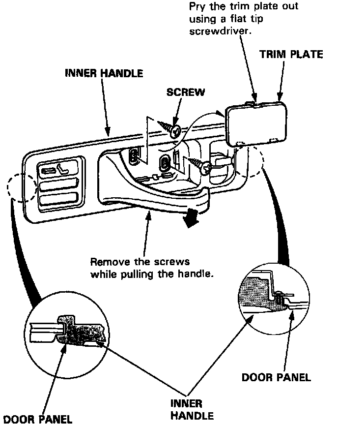
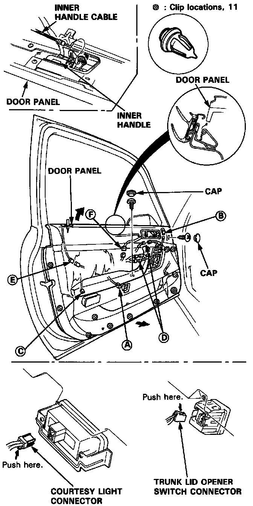
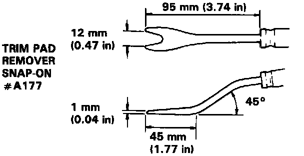
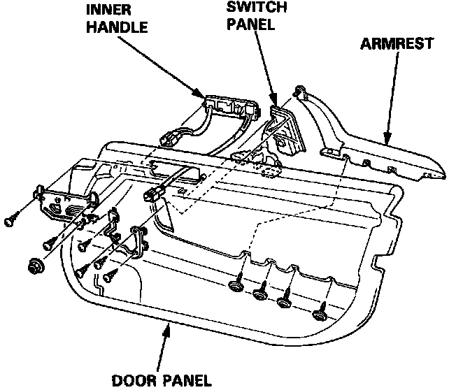
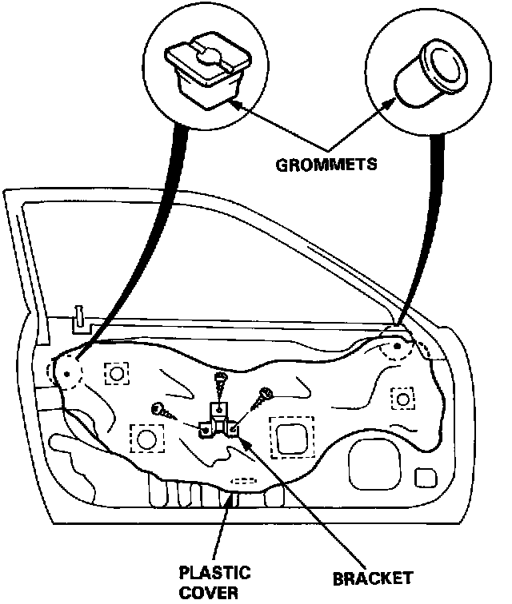
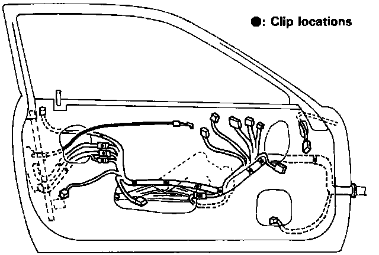
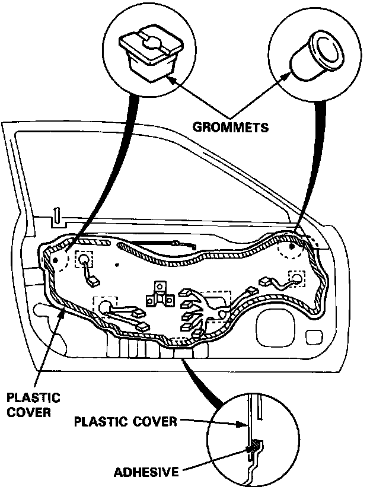

Front Door Panel: Service and Repair
Door Panel/Plastic Cover Replacement
1. Remove the trim plate, then remove the screws.
CAUTION: When prying with a flat tip screwdriver, wrap it with tape to prevent damage.
NOTE:
^ Do not remove the inner handle from the door panel.
^ Remove the door panel with as little bending as possible to avoid creasing or breaking it.


2. Remove the caps, screws and clips (see trim pad remover) attaching the door panel.
Remove the door panel by pulling it upward and disconnecting inner handle cable.
Disconnect the connectors.
(A) Trunk lid opener switch connector
(B) Power door lock switch connector
(C) Courtesy light connector
(D) Power window/power door mirror switch connectors
(E) Security alarm connector
(F) Power seat memory switch connector

3. If necessary, remove the armrest, switch panel and inner handle from the door panel.

4. Remove the grommets and carefully remove the plastic cover.
NOTE: When removing the grommets, use a trim pad or clip remover.
5. Install the door panel and plastic cover in the reverse order of removal.

^ Make sure the door harness and connectors are fastened correctly on the door.

^ Apply adhesive along the edge where necessary to maintain a continuous seal and prevent water leaks.
^ Before tightening the door panel mounting screws, make sure the door harness is not pinched.